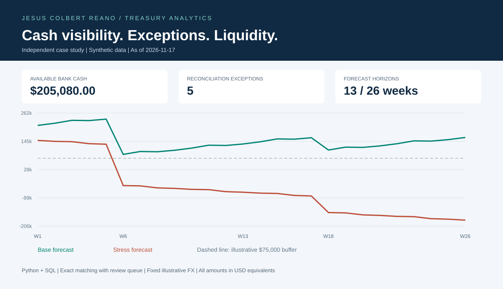

01
Ubicar el efectivo
Separo banco, fondos restringidos, quioscos y efectivo en tránsito. La conversión EUR/USD utiliza un supuesto fijo declarado.
Una demostración de conciliación bancaria, posición diaria de caja y pronósticos a 13 y 26 semanas. Del movimiento individual a una conversación clara sobre riesgo y decisiones.
En una fintech ficticia con cuentas en USD y EUR, separar el efectivo disponible, investigar diferencias y anticipar necesidades de fondos cambia la calidad de la decisión.
Separo banco, fondos restringidos, quioscos y efectivo en tránsito. La conversión EUR/USD utiliza un supuesto fijo declarado.
Comparo cuenta, moneda, referencia, importe y fecha. Las partidas ambiguas o no coincidentes quedan en una cola de revisión.
Un calendario semanal genera las vistas de 13 y 26 semanas. El escenario de estrés retrasa cobros y aumenta pagos.
El reporte muestra la primera brecha frente a un colchón ilustrativo, junto con supuestos y acciones que requieren aprobación.
USD equivalentes al inicio del pronóstico
Escenario base
Umbral ilustrativo de USD 75.000

El motor encuentra cuatro pares exactos y deja cinco grupos para revisión. Una fila bancaria idéntica importada dos veces se excluye, pero no se borran diferencias reales.
El pago registrado en libros y el extracto EUR difieren en EUR 100. Se compara instrucción, factura y aviso bancario.
USD 7.000 aparecen en banco, pero no en el libro. Deben verificarse su origen y disponibilidad.
Un pago pendiente y un depósito aún no bancarizado exigen revisar fecha de liquidación y soporte.
El ejercicio usa cifras en centavos, fuentes ficticias y reglas documentadas. Permite pasar del resultado visual a las entradas, cálculos y pruebas.